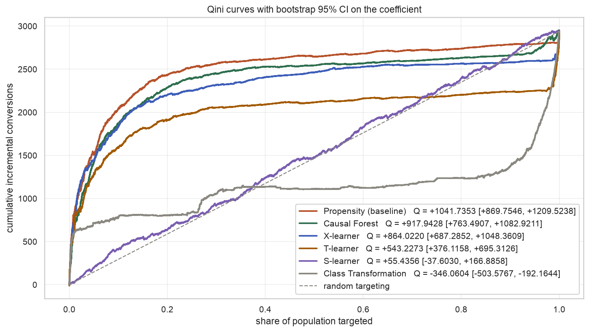
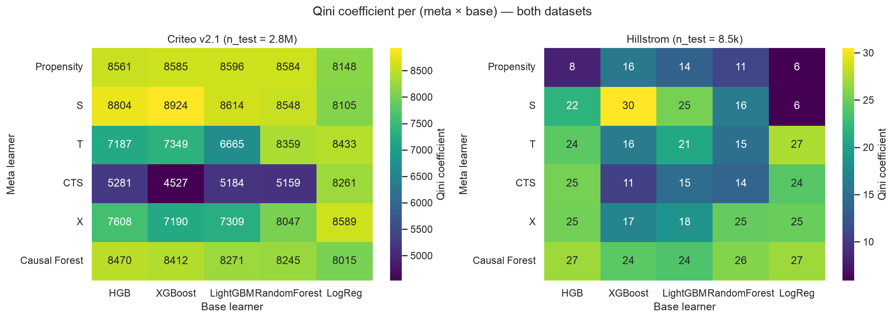
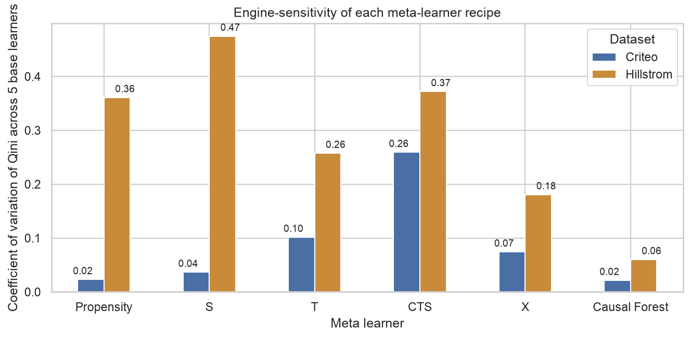
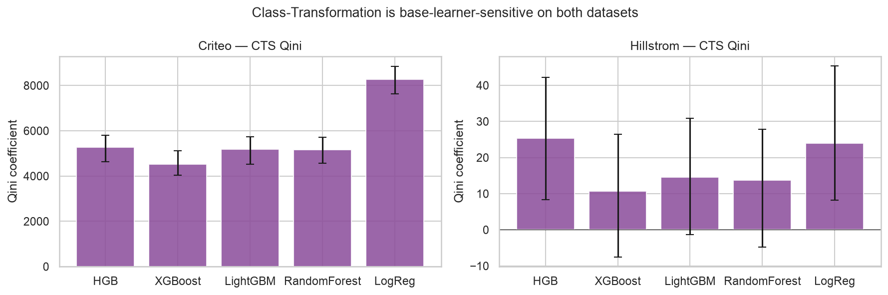
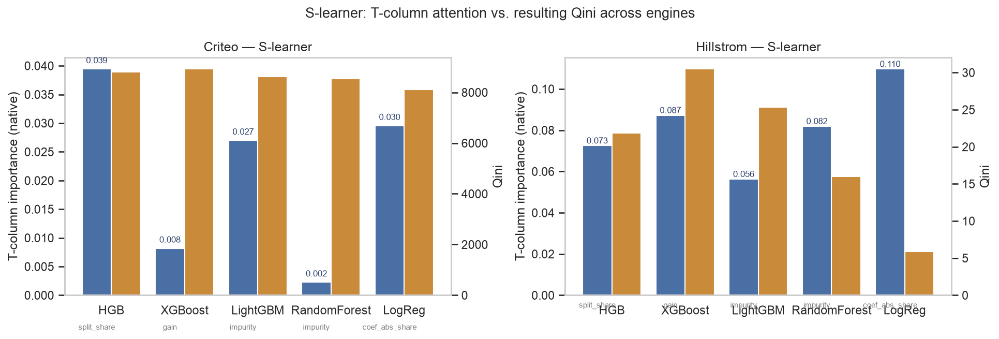

This paper reports two studies on the same public benchmark. Study 1 replicates the Diemert et al. (2018) uplift-modeling baseline on Criteo Uplift v2.1 using HistGradientBoosting as the base learner across all six meta-learners. Two findings stand out: the S-learner degenerates to a constant uplift prediction (Qini 46, 95% CI [−38, 167]) because the base learner never splits on the treatment column, and the Class-Transformation learner ranks worse than random targeting (Qini −350, 95% CI [−504, −192]). Both findings contradict the ranking reported by UpliftBench (2026), which used LightGBM on the same dataset and found the S-learner topped the leaderboard. The only meaningful difference between the two runs is the base learner.
Study 2 makes that observation the object of measurement. Sixty configurations — 6 meta-learners × 5 base learners × 2 datasets — are evaluated under identical protocol. The Class-Transformation recipe swings from Qini 4527 to 8261 on Criteo (visit outcome, 500k train), and the S-learner swings from Qini 6 to 30 on Hillstrom, purely by swapping the base learner. Rankings transfer poorly across datasets (Spearman ρ = 0.18). One recipe, Causal Forest, is nearly engine-agnostic on both datasets. Statements of the form “X-learner beats S-learner” specify only a third of the experiment; base learner and dataset must be fixed to make the claim testable. Benchmark papers should tabulate results across a base-learner grid rather than freeze a single engine.
Uplift modeling is the machine-learning problem of estimating the causal effect of a treatment on an outcome for each individual, given randomized-experiment data. It turns an average treatment effect into a per-user targeting policy. A meta-learner is a recipe for producing an uplift estimate by combining one or more standard supervised models — the base learners. The S-learner fits one classifier with the treatment indicator added as a feature; the T-learner fits two classifiers, one per arm; the X-learner (Künzel et al., 2019) stacks two outcome models and two pseudo-uplift models with propensity weighting; the Class-Transformation learner (Jaskowski & Jaroszewicz, 2012) recasts uplift as a single weighted classification. Causal Forest (Wager & Athey, 2018) is a bespoke tree ensemble whose splits maximize treatment-effect heterogeneity, rather than a wrapper over a generic base learner.
Published benchmarks compare these recipes on shared datasets and report a ranking by Qini coefficient or AUUC. Diemert et al. (2018) reported one such ranking on Criteo Uplift v2.1. UpliftBench (2026) reported another, again on Criteo v2.1, and found the S-learner topped the leaderboard. Study 1 in this paper is a third replication of the same six-model comparison on the same dataset, using HistGradientBoosting as the base learner across the board. It finds the S-learner degenerated to a constant uplift prediction and the Class-Transformation learner ranked worse than random. Three papers, three rankings, one dataset. The only difference between them is the base learner they slot into the meta-learner recipes.
Study 2 makes the base-learner axis the primary axis of variation. Six meta-learners × five base learners × two datasets = 60 configurations. Under uniform evaluation, the Class-Transformation recipe ranges from Qini 4527 to 8261 on Criteo purely by swapping HistGradientBoosting for Logistic Regression; the S-learner ranges from Qini 6 to 30 on Hillstrom across the same base-learner grid; Causal Forest is nearly flat on both datasets. The rankings do not transfer between the two datasets (Spearman ρ = 0.18).
The paper makes three contributions:
For each unit i, define potential outcomes Yi(1) if treated and Yi(0) if not. The individual causal effect τi = Yi(1) − Yi(0) is unobservable; only one potential outcome per unit is realized. The conditional average treatment effect (CATE), τ(x) = 𝔼[Y(1) − Y(0) | X=x], is the target of uplift modeling. When treatment is randomized as it is in both datasets studied here, the CATE can be identified from observational moments; meta-learners are recipes for estimating it.
A base learner is any supervised estimator that predicts Y from X (or T from X, depending on the role). A meta-learner is a rule for combining fits from one or more base learners into a CATE estimate. The S-learner fits μ(x, t) = 𝔼[Y|X=x, T=t] on the augmented feature matrix and returns μ(x, 1) − μ(x, 0). The T-learner fits μ1 on treated and μ0 on control separately. Class-Transformation defines Z = 1{T = Y} and reads uplift off P(Z=1|X) via the identity τ(x) = 2P(Z=1|x) − 1 under balanced treatment (extended with inverse-propensity weights for imbalanced cases). X-learner is a two-stage recipe using four base-learner fits plus propensity blending. Causal Forest is a purpose-built estimator with its own splitting rule; the DML formulation (Chernozhukov et al., 2018) does expose two nuisance-model slots (μy and μt) that behave as base learners for the sensitivity purposes of Study 2.
Uplift models are evaluated by their Qini curve: sort users by predicted uplift, then trace the cumulative observed treatment-vs-control conversion gap as more users are targeted. The Qini coefficient is the area between the model's Qini curve and the straight line from origin to the terminal point (random targeting). Higher is better; zero means no better than random; negative means worse than random. Confidence intervals are 200-iteration percentile bootstraps on the coefficient.
Diemert et al. (2018) introduced Criteo Uplift v2.1 and reported baseline results for the four classical meta-learners (S, T, Class-Transformation, propensity-only) on a large-scale randomized ad experiment. UpliftBench (2026) extended the comparison to X-learner and Causal Forest under LightGBM base learners and reported the S-learner as the top method on Criteo, with X-learner underperforming despite its theoretical robustness to treatment imbalance. Rößler et al. (2022) surveyed a broader set of datasets and observed that estimator rankings vary across data regimes but did not systematically vary the base learner. Rehill (2025), in a review of causal forests, noted the sensitivity of DML-style estimators to nuisance-model choice but did not extend the analysis to the S/T/X-family.
Six meta-learners (Propensity baseline, S-, T-, Class-Transformation, X-learner,
Causal Forest) fit on Criteo Uplift v2.1. The full 11.2M-row training set is used for
five of the six recipes; Causal Forest is fit on a 500k stratified downsample to keep
RAM under 2 GB. The conversion outcome is used (base rate ≈ 0.3%). The
base learner throughout is HistGradientBoostingClassifier from scikit-learn
with default hyperparameters. Evaluation is on the shared 2.8M-row held-out test set
(80/20 split, stratified on treatment, seed 42). Qini + 200-iteration bootstrap CI
+ AUUC per recipe.
Table 1 gives the ranking. Figure 1 overlays the six Qini curves.
| Rank | Model | Train size | Qini [95% CI] | AUUC |
|---|---|---|---|---|
| 1 | Propensity (baseline) | 11.2M | 1045 [870, 1210] | 2513 |
| 2 | Causal Forest | 500k | 929 [763, 1083] | 2397 |
| 3 | X-learner | 11.2M | 858 [687, 1048] | 2326 |
| 4 | T-learner | 11.2M | 545 [376, 695] | 2013 |
| 5 | S-learner | 11.2M | 46 [−38, 167] | 1514 |
| 6 | Class Transformation | 11.2M | −350 [−504, −192] | 1118 |

Two findings drive Study 2. First, the S-learner degenerated. Its
Qini coefficient of 46 has a 95% bootstrap CI of [−38, 167] that spans zero — the
S-learner is statistically indistinguishable from random targeting. Direct inspection
of the fitted model confirms the mechanism: HistGradientBoosting's greedy split-finding
never selects the treatment column at any node. The 12 real features
(f0–f11) contain enough signal to swallow the entire depth
budget. With no split on T, the S-learner's μ(x, 1) and
μ(x, 0) are identical for every user, and μ(x, 1) −
μ(x, 0) is the zero function.
Second, the Class-Transformation learner ranked worse than random (Qini −350, 95% CI [−504, −192]). Not degenerate — actively anti-informative. Sorting users by predicted uplift and targeting the top decile captures fewer incremental conversions than random targeting would. The recipe combines outcome and treatment into a transformed label, applies inverse-propensity sample weights (Criteo is 85/15, so weights are ≈ 1.18 for treated and ≈ 6.67 for control), and reads uplift off the classifier's probability. Under HGB with default hyperparameters, this transformation produces a ranking anti-correlated with true uplift.
These two failures are notable because both recipes are standard tools in the uplift literature. Neither is unfamiliar or exotic. Both, on the largest publicly available uplift benchmark, produce results that a practitioner deploying the recipe from a textbook would not have anticipated. Both are also products of a specific base learner: HistGradientBoosting was the choice, and it is not the choice UpliftBench (2026) made. UpliftBench reported the S-learner topped the ranking; here it is fifth of six.
Study 2 asks: how much of that ranking difference is attributable to the base learner?
A grid of 60 configurations: six meta-learners × five base learners × two datasets.
Every configuration is evaluated identically. The visit outcome is used
in Study 2 instead of the conversion outcome used in Study 1
(base rate ≈ 5%), because visit is dense enough to produce stable Qini estimates on
the 500k training subsample the memory-heavy Causal Forest requires. The change in
outcome variable means Study 1 and Study 2 Qini values are not directly comparable in
scale, but rankings within each study are internally coherent.
Criteo Uplift v2.1 (Diemert et al., 2018) — same source as Study 1. Twelve continuous features, binary treatment (85/15 treated/control), binary visit outcome. Train/test split: 80/20 stratified by treatment, seed 42. Training set downsampled to 500,000 rows for tractability across all six meta-learners; the held-out test set is the full 2.8M rows.
Hillstrom (MineThatData, 2008) — 64,000-row email-marketing experiment with three arms. Reduced to a binary experiment by dropping the men's arm, giving 42,693 rows with a near-balanced 50.1/49.9 split and an observed 4.5 percentage point visit lift for the treated arm. Eight raw features (five numeric, three categorical) are one-hot expanded to eighteen columns. Same 80/20 stratified split.
Same six as Study 1: Propensity, S, T, Class-Transformation, X, Causal Forest.
Under a common (fit, predict_uplift) interface. Causal
Forest is econml.dml.CausalForestDML with 100 trees and
min_samples_leaf=20; the two nuisance slots
(model_y, model_t) are exercised as the base-learner dimension.
Five engines, all sklearn-compatible, configured for comparable capacity (100 estimators
where applicable; matched random_state):
max_iter=100, learning_rate=0.1.n_estimators=100, learning_rate=0.1,
max_depth=6, tree_method="hist".n_estimators=100, learning_rate=0.1,
num_leaves=31. This is the engine used by UpliftBench (2026); its
inclusion here supports direct comparison.n_estimators=100, max_depth=12,
min_samples_leaf=20. Bagged, with random feature subsampling at each split.Pipeline(StandardScaler, LogisticRegression(max_iter=1000))
for the classifier role; Ridge for the regressor role. Every feature receives
non-zero weight in the linear fit; the treatment column cannot be ignored.Every configuration is evaluated on the same held-out test set for its dataset. The primary metric is the Qini coefficient with 200-iteration percentile bootstrap CI. AUUC is reported as a secondary within-dataset metric. Decile calibration checks that predicted uplift matches observed uplift in level.
For every S-learner fit, two diagnostics are recorded: (i) the fraction of the base
learner's native attention that landed on the treatment column, and (ii) the mean
absolute uplift the fitted S-learner produces on a 5,000-row held-out sample. The
first metric is engine-specific: feature_importances_ for XGBoost (gain),
RandomForest and LightGBM (impurity); |coef_| share for Logistic
Regression; and a walk of _predictors counting the fraction of internal
splits on the treatment column for HistGradientBoosting. The metrics are not
comparable in absolute terms across engines but each identifies, within its engine,
how much capacity was allocated to the treatment feature. The second metric — mean
absolute uplift — is engine-agnostic. When it falls below 10−6, the fitted
S-learner produces the same uplift for every user in the sample; the estimator has
degenerated.
Figure 2 shows Qini coefficients for every (meta, base, dataset) cell.

Reading the heatmap:
Figure 3 collapses each row of the heatmap into a coefficient of variation — the standard deviation of Qini across the five base learners, divided by the mean. Higher CV means more base-learner-sensitive.

| Meta-learner | Criteo CV | Hillstrom CV | Criteo range | Hillstrom range |
|---|---|---|---|---|
| Propensity | 0.023 | 0.361 | 448 | 9.7 |
| S-learner | 0.037 | 0.475 | 820 | 24.6 |
| T-learner | 0.101 | 0.257 | 1768 | 12.5 |
| Class-Transformation | 0.259 | 0.372 | 3735 | 14.7 |
| X-learner | 0.074 | 0.181 | 1399 | 8.3 |
| Causal Forest | 0.021 | 0.060 | 455 | 3.3 |
Three patterns emerge. First, Causal Forest is the most stable recipe on both datasets, with CV under 0.1 in both cases. Second, Class-Transformation is highly sensitive on both, at CV 0.26 and 0.37. Third, the sensitivity of the remaining recipes flips across datasets — Propensity is stable on Criteo (CV 0.02) but wildly unstable on Hillstrom (CV 0.36); the S-learner is the reverse (CV 0.04 vs 0.48). Base-learner sensitivity is itself dataset-dependent.
Class-Transformation is the recipe most vulnerable to base-learner choice. Figure 4 isolates it. On Criteo, the four tree-based engines produce Qini 4527–5281, while Logistic Regression produces Qini 8261. On Hillstrom the pattern reverses: HistGradientBoosting and Logistic Regression tie near Qini 25, while XGBoost collapses to Qini 10.6.

The Class-Transformation recipe treats the outcome variable as Z = 1{T=Y}, weighted by inverse-propensity. On Criteo's 85/15 imbalance, treated units carry weight w = 1/0.85 ≈ 1.18 and control units carry w = 1/0.15 ≈ 6.67 — a factor-of-five weight ratio. Tree-based engines, under histogram binning and regularization, appear to underfit the reweighted signal on this dataset; Logistic Regression's global least-squares fit does not. On Hillstrom's balanced 50/50 split, weights are near-uniform and the collapse mechanism differs. Recall Study 1: on the full 11.2M-row training set, Class-Transformation with HGB ranked worse than random (Qini −350). Same recipe, same base learner, different training-set size — and the Qini flips from strongly positive to strongly negative. Base-learner sensitivity compounds with sample-size sensitivity.
The S-learner's failure mode is the treatment feature being ignored by the base learner. Figure 5 pairs the T-column importance metric (blue bars) with the resulting S-learner Qini (orange bars) for each engine.

gain for XGBoost, impurity
for LightGBM and RandomForest, split_share for HistGradientBoosting,
coef_abs_share for Logistic Regression.
RandomForest allocates only 0.2% of its attention to the T column on Criteo but still produces a working S-learner (Qini 8548). Random feature subsampling forces each split to consider a random subset of columns, so the treatment column is periodically the only tree-relevant feature available at a node. XGBoost gives T just 0.8% gain but produces the highest S-learner Qini on Criteo (8924). HistGradientBoosting gives T 3.9% of its splits on the 500k Criteo subsample — considerably more than in Study 1's 11.2M-row run, where the same engine allocated 0.0% of splits to T. The base learner's attention to weak features is sample-size sensitive.
Logistic Regression is the reverse story. It is forced to weight T (3.0% coef-share) because the linear form cannot ignore any input; and yet its S-learner Qini (8105) is the lowest of the five. Native attention is not a proxy for Qini performance; it is a diagnostic for why the recipe did or did not degenerate.
The Spearman rank correlation between the two datasets' full 30-cell rankings is ρ = 0.18. That is, the ordering of (meta, base) cells by Qini on Criteo has almost no relationship to the ordering on Hillstrom. Table 3 shows the top three cells on each dataset.
| Rank | Criteo — cell | Qini [95% CI] | Hillstrom — cell | Qini [95% CI] |
|---|---|---|---|---|
| 1 | S-learner + XGBoost | 8924 [8273, 9469] | S-learner + XGBoost | 30.5 [8.9, 51.4] |
| 2 | S-learner + HGB | 8804 [8191, 9354] | T-learner + LogReg | 27.4 [13.1, 47.0] |
| 3 | S-learner + LightGBM | 8614 [7828, 9158] | Causal Forest + HGB | 26.9 [7.1, 45.2] |
S-learner + XGBoost is the single cell that wins on both datasets. Beyond that, the rankings diverge: on Criteo, three S-learner cells occupy the podium; on Hillstrom, the podium spans three different meta-learners. Confidence intervals on Hillstrom overlap substantially because the test set is 300× smaller than Criteo's, but the point estimates still tell a consistent story of ranking non-transferability.
Study 1 and Study 2 report on the same benchmark dataset with the same six recipes under the same evaluation, differing only in the base-learner choice, the training sample size, and the outcome variable. Under Study 1's setup, Propensity and Causal Forest top the ranking, S-learner is degenerate, and Class-Transformation is worse than random. Under Study 2's Criteo setup with the same HGB base learner, S-learner moves from bottom to top of the ranking, Class-Transformation moves from actively harmful to positive but base-learner-sensitive, and Causal Forest becomes one of several competitive recipes rather than the second-best.
Two levers move between the studies: the training sample size (11.2M → 500k) and the outcome variable (conversion → visit). Both matter. The sample-size effect is visible in the S-learner diagnostic: HGB allocates 0% of splits to T on 11.2M rows but 3.9% on 500k. The outcome-variable effect is visible in the Qini scale (Study 1 Qini ~1000; Study 2 Criteo Qini ~8000, roughly consistent with the ratio of visit to conversion base rates). Neither lever is a base-learner effect, but both interact with the base learner in ways that change the reported ranking of the meta-learners under it.
A meta-learner benchmark that reports “X-learner beats S-learner on Criteo” specifies one of at least four axes needed to make the claim reproducible. The other three are: the base learner (which Study 2 shows can flip the ranking by factors of two or more), the training sample size (which Study 1 vs Study 2 shows can flip the S-learner's status between degenerate and best-in-class), and the outcome variable (which changes the Qini scale entirely). Under-specification is not a rhetorical problem — it makes reported rankings unreproducible in practice, because a reader deploying the same recipe with a different engine, on a different-sized subsample, or against a different outcome has no basis for expecting the ranking to hold.
The strongest form of this argument is Class-Transformation on Criteo. In Study 1, Qini = −350 (worse than random). In Study 2 with the same HGB base learner, Qini = 5281 (positive but weak). In Study 2 with Logistic Regression, Qini = 8261 (top-tier). Same recipe, same dataset, different (base learner + sample size + outcome) → three qualitatively different conclusions about the recipe. If the reader were told only “Class-Transformation achieved Qini X on Criteo,” all three of these numbers are correct depending on which experiment X refers to.
From Table 2, engine sensitivity depends on both the recipe and the dataset. Causal Forest is stable because it does the causal estimation itself; the nuisance models only residualize Y and T at the front end. Class-Transformation is sensitive because it collapses causal inference into a single classification target, and the mapping from probability estimates back to uplift is highly susceptible to how well the base learner calibrates on the transformed target. S-learner sensitivity is a function of whether the base learner attends to the treatment column — which depends on the number of competing features, their strength, and the sample size, as the Study 1 vs Study 2 comparison shows.
Two datasets. Criteo and Hillstrom are the most widely-cited public uplift benchmarks, but they cover only display advertising (Criteo) and email marketing (Hillstrom). The strong Spearman finding (ρ = 0.18) suggests non-transferability is real but does not identify how far it extends.
Single seed. Each configuration is fit once with random_state=42.
Repeating with multiple seeds and reporting mean ± std would tighten the small-sample
Qini estimates on Hillstrom in particular. The bootstrap CI in the reported evaluation
captures test-set uncertainty but not model-init uncertainty.
Outcome-variable difference between studies. Study 1 uses
conversion (base rate ≈ 0.3%) and Study 2 uses visit (base
rate ≈ 5%) as the outcome. Qini values are not directly comparable across the two
studies for this reason. The paper's argument depends on internal rankings within
each study, and on the qualitative Class-Transformation flip
(worse-than-random → strong positive), which does not depend on the scale.
Fixed hyperparameters within each engine. Every base learner uses a fixed 100 estimators, learning rate 0.1, and mild depth caps. Tuning each engine separately could narrow the base-learner spread, though the paper's argument is not that base learners are irreconcilable — only that they are not interchangeable, and hyperparameter tuning is another source of unnamed variation.
500k Criteo subsample in Study 2. A tractability concession for Causal Forest. Non-CF learners could have used the full 11M rows; using the same 500k across all Study 2 configurations preserves fairness at the cost of not fully reproducing Study 1's large-sample dynamics.
Aggregate metrics only. Qini and AUUC are aggregate rankings. Calibration was recorded per config but not summarized in this paper's figures. A recipe that ranks well but calibrates badly may be less useful in decision-making contexts than the Qini alone suggests.
Meta-learner rankings in uplift modeling are contingent on a factor that benchmark papers usually name only in passing: the base learner. Study 1 replicates the Criteo baseline under HistGradientBoosting on the full 11.2M-row training set and finds two functional failures — an S-learner that degenerates to constant uplift and a Class-Transformation learner that ranks worse than random. Study 2 sweeps five base learners on two datasets and finds that neither failure is a stable property of the recipe: the S-learner tops the leaderboard under most base learners at 500k train, and Class-Transformation moves from Qini −350 to Qini +8261 depending on the engine. One recipe, Causal Forest, is nearly engine-agnostic on both datasets.
The practical implication is that any claim of the form “method A beats method B on dataset D” is under-specified. To be actionable, uplift-methodology claims must specify (i) the base learner or learners tested, (ii) the training sample size, and (iii) the outcome variable. Benchmarks that report only the meta-learner have described a fraction of the experiment. The recommendation for future benchmark papers is to tabulate results across a base-learner grid — as Study 2 does — and to publish coefficients of variation alongside point Qini values so readers can distinguish stable claims from unstable ones.
uv sync brew install libomp # macOS only; for XGBoost/LightGBM python scripts/download_data.py # Study 1 (Criteo replication with HGB on the full 11.2M train) jupyter lab notebooks/part1_criteo_replication/ # run 01 → 04 # Study 2 (base-learner sweep) python -m experiments.sweep jupyter lab notebooks/part2_base_learner_sensitivity/Every figure in this paper is written to
artifacts/ by the notebooks.
Full Study 2 sweep runtime on an Apple M2: ~20 minutes.